Burger Records
Burger Records, a franchise in Russia and Thailand, blends music, food, and nostalgia. Tasked with creating a borderless brand, we explored the history of burger joints and vinyl music. The unifying element we found was the Shhhh sound — reminiscent of vinyl, sizzling cutlets, and crackling fires, creating a comforting ambiance. The Shhhh sound inspired our identity — a mix of coziness, nostalgia, and progressiveness, centered around love for burgers and vinyl. We chose nostalgic yet vibrant shades and the playful Mabry Pro font to capture the unique atmosphere. Graphic elements artfully included the Shhhh sound, and for added nostalgia and Americana, we introduced the mascot "Minced Meat."
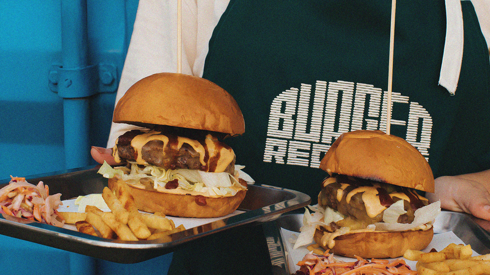
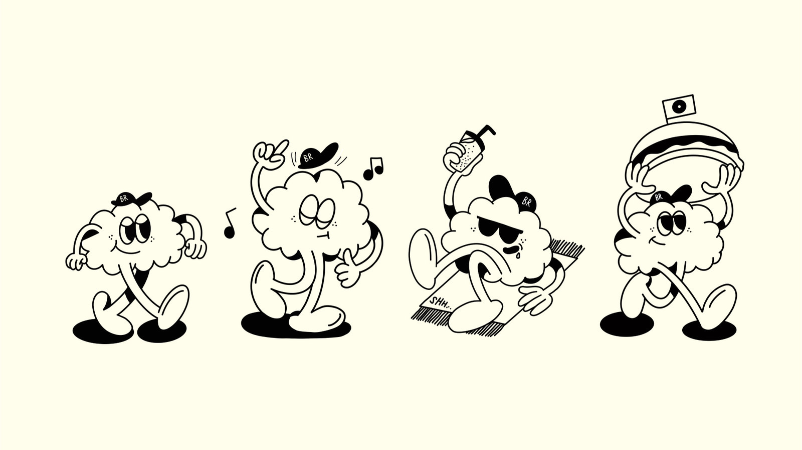
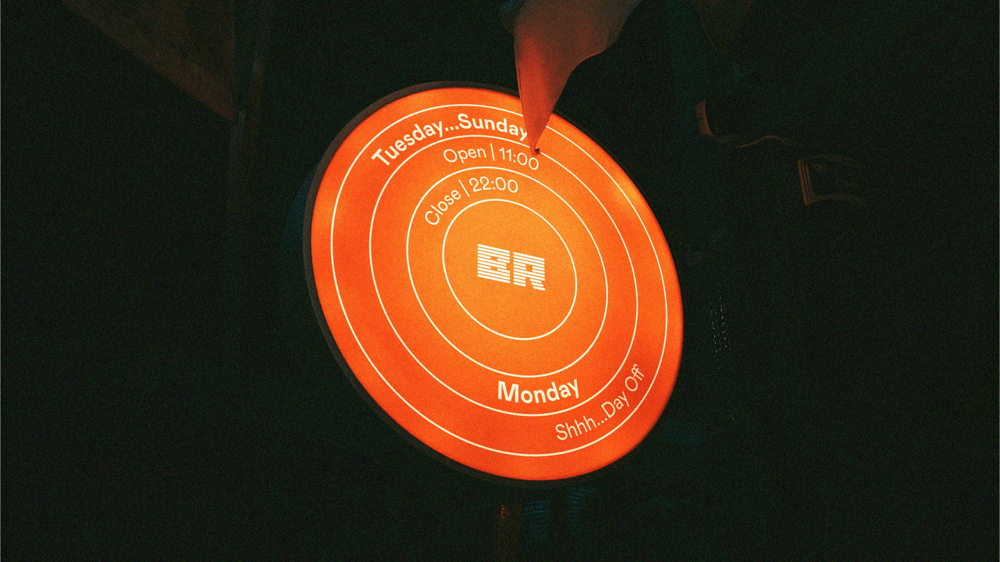
Purpose: To rebrand and package brand values to expand the network. Challenge: To convey a sense of warmth, atmosphere and nostalgia. Brand Mission: Create a unique experience by combining delicious burgers inspired by the best of street food traditions and unconventional recipes with music from vinyl records. Brand Vision: We needed to translate these meanings into a visual image that would bring the burgers and the music together. We started researching what records are loved for and came to the conclusion that they are loved for their warm sound. This sound feels warm because of the roughness and crackle. This type of sound can be compared to the crackle of a campfire or the sizzle of a frying pan. In our case, music and burgers are united by sound. Brand Essence: Burger Records' identity is sound, EQ, music player, soundwave, soundtrack.
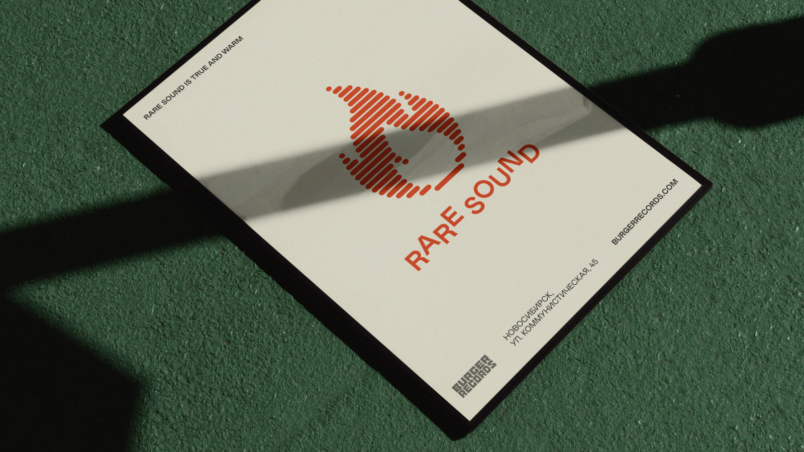
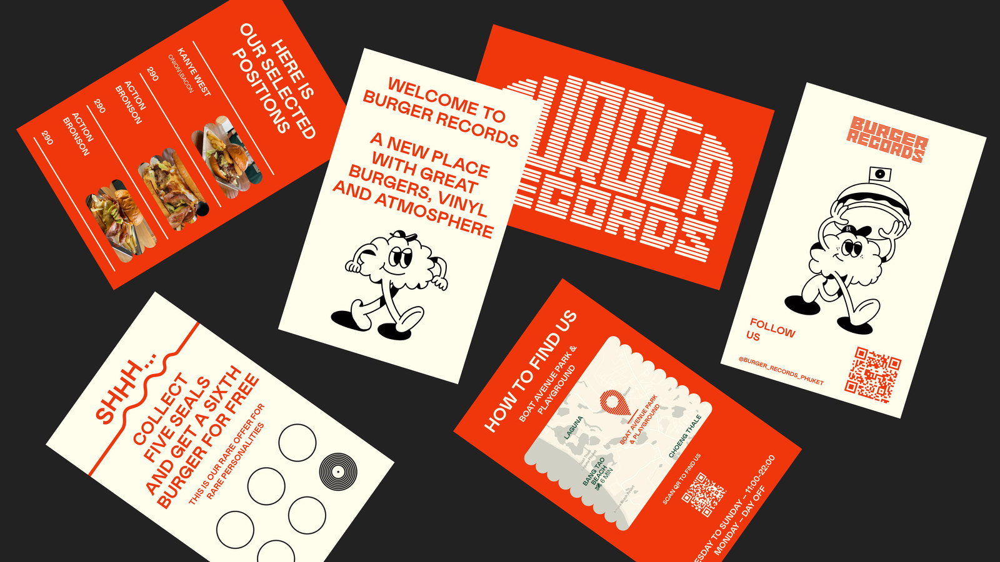
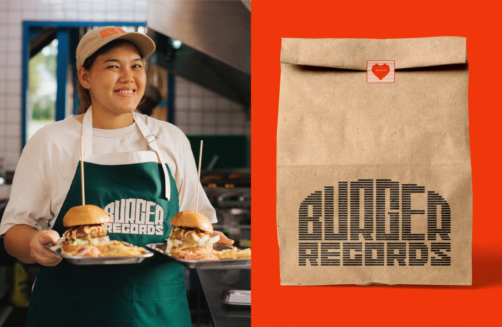
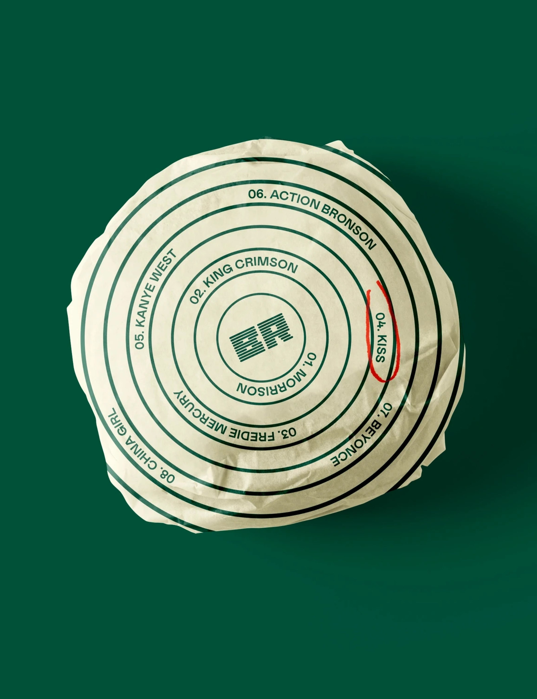
First the logo was born out of this idea, and then a custom Burger Records font was born out of it, which is used in the headlines. For the text we chose Colophon's Mabry Font. It does a good job of emphasising the nostalgic character and has a connection to the music. We did a competitor analysis and found that most were using pure red combined with black. After several iterations, the client decided on bright carrot (a category colour), dark green and beige as the main colours, complemented by graphite black.
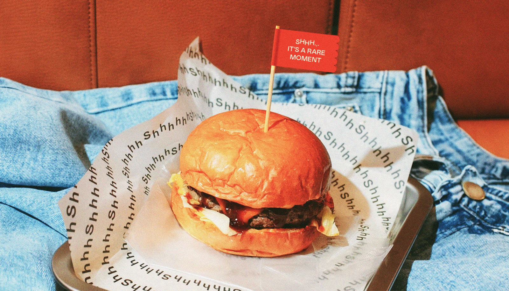
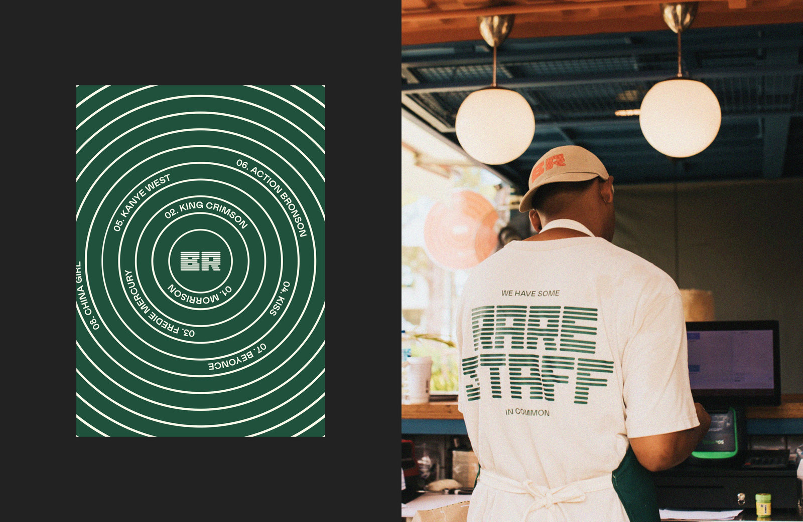
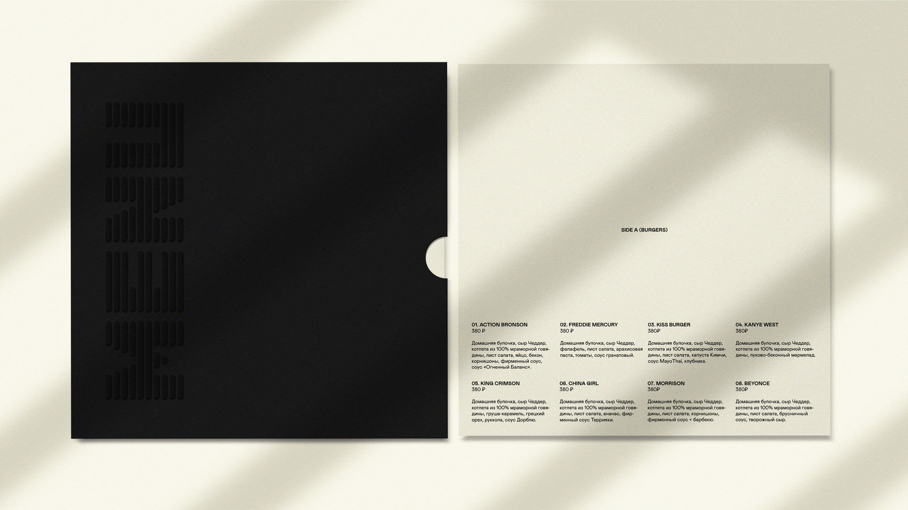
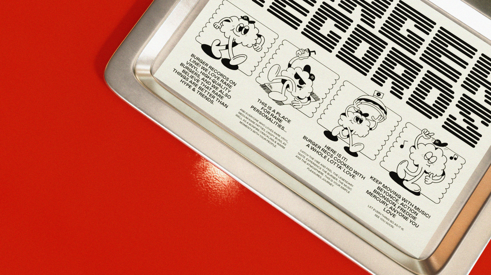
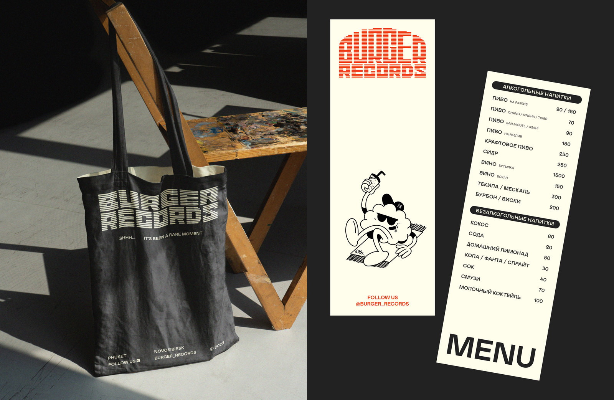
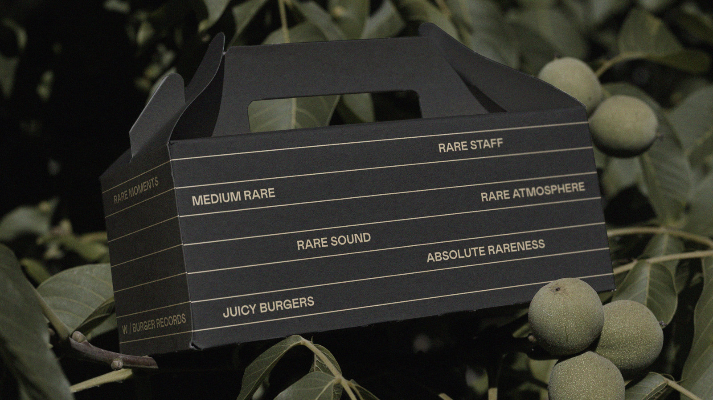